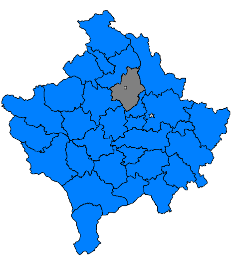

I Live In A City Called Vushtrria(1922)
Vushtrri is an old city, but also modern city, which is located in the northern part of the Republic of Kosovo.
Today's Vushtria was earlier called Viciana , or as it is known in Latin sources: Vicianum.
My City Has A Population Of 69,881 People
Vushtrria has a total area of 345 km2
Vushtrri is an ancient place, dating earlier than the Roman Empire, namely from the time of the Dardanians.
At the time of the Roman Empire there was a station called Vicianum,as evidenced by the inscription found in the district of Kumanova, which is considered a sign of the direction of the road to Viciana
Meanwhile, the Turkish and Slavic tribes that came to the Balkans in the VI-VII century, destroyed this peninsula and adapted the old Pelazgo-Illyrian toponyms to their languages.
In the II-III centuries, Christianity dominated in Viciana, while after the division of Christianity in 1054 into Catholicism and Orthodoxy, the majority of Viciana's population was Catholic.
In the Middle Ages, Viciana was marked with the name VIÇITRINA (Trina of calves), while the Slavs Slavicized this name by calling it "VUÇITRN".
In the 14th century, the Ottoman Empire began to conquer the Balkans. In Vushtrri, the presence of the Ottomans was first recorded in 1439, while it was finally conquered in 1455. The establishment of the Ottoman administration in Vushtrri led to the spread of the Islamic religion in this city and the construction of mosques, inns, madrassas, hammams, etc.
Gjatë shekujve XV-XVIII, Vushtrria ishte ndër qytetet më të mëdha në Ballkan dhe në Perandorinë Osmane dhe qendër e sanxhakut më të rëndësishëm të Perandorisë Osmane.
During the XV-XVIII centuries, Vushtrri was among the largest cities in the Balkans and in the Ottoman Empire and the center of the most important sanjak of the Ottoman Empire.
During the First World War, namely during the years 1915-1918, Vushtrri was occupied by Austria-Hungary.
In World War II (1941-1945), Vushtrri and its surroundings belonged to the area occupied by the Germans. On November 21, 1944, the Yugoslav communist administration was established in Vushtrri, against which the entire population was against.
In March 1989, Serbian state violence destroyed the Kosovo Constitution of 1974. Again, the entire population rose up against this violence, which ultimately resulted in the armed struggle of the people of Kosovo against this state violence and genocide, organized by the Army Kosovo Liberation Army (KLA) and helped by the intervention of NATO forces (March - June 1999), which put an end to this situation. During this war, over 500 civilian Albanians were killed in Vushtrri and its surroundings and over 100 others disappeared. NATO forces entered Vushtrri on June 16, 1999
Dita e çlirimit të Vushtrrisë është 17 qershori.
Medieval bridge with nine arches

Turkish Bath In Vushtrria
Vushtrri's castle
My City Also Has A Football Club And Its Called KF VUSHTRRIA
They Are Third In First league Of Kosovo
Their Fans Are Called ULTRAS FORCA